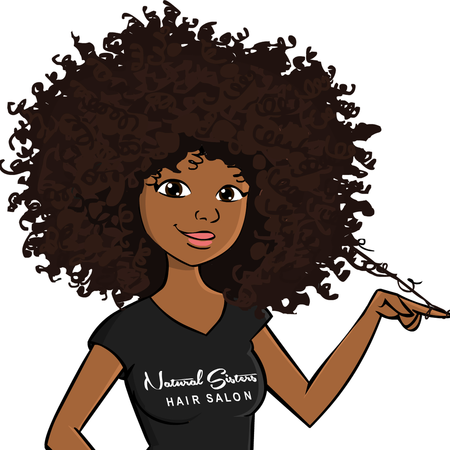

Hair Hacks
Curly hair requires special care in order to look defined and healthy—but caring for your curls isn’t as demanding as you may think. If the thought of an extensive hair care routine intimidates you, I have good news: I know 4 easy beauty hacks for keeping your spirals hydrated and healthy.
Hack #1
The ultimate solution to moisturized and defined curls starts in the shower. While washing your hair, make sure to use a moisturizing shampoo and conditioner. For those with tighter curls, spend extra time combing your hair with a wide tooth comb while there is conditioner in it.
Hack #2
Although most of us don't think twice about the type of towel we use, cotten towels can cause frizz by causing friction against the hair cuticles. Using a microfiber towel will bring you one step closer to frizz-free hair!
Hack #3
Much like a cotten towel, cotten bed pillowcases may not be gentle enough for your hair. A smooth, satin or silk pillowcase will not only feel super luxurious, but will also take it easy on your mane.
Hack #4
Blow dryers can expose hair to intense, direct heat which in turn causes curls to be frizzy and lose their natural shape upon drying. With a diffuser, heat is distributed more evenly, helping to prevent this frizz and enhance your individual curl pattern. Before drying, don’t forget to apply product to protect your hair from the heat.